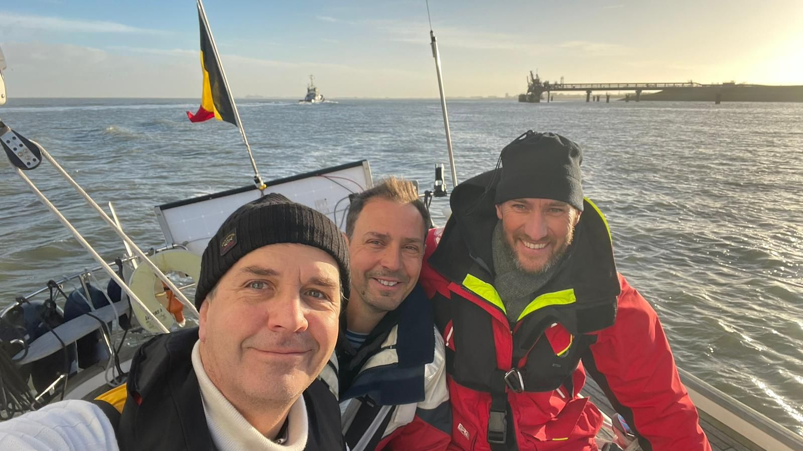
11 januari 2024
Nomad goes winter
De Tournée Générale zal zich quasi altijd in prachtige weersomstandigheden afspelen, maar dat betekent niet dat we alleen maar goed-weer-zeilers zijn. Ook in de winter 2023-2034 nemen we de Nomad af en toe mee om buiten te gaan spelen.
Part 1: Met Redgie en Timo in december

Weekendje Zeeland met overnachting in Terneuzen bij 3-4°C, bakken regen en 30-35kts wind op zee. Crew: Redgie & Timo. Genieten!
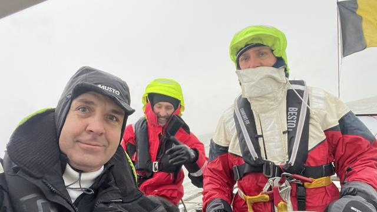
Part 2: Zeebrugge - Zierikzee en terug met Stocky, Willem en Benny
Ook voor deze uitstap heerlijke condities: 2-3° C, mooi windje van 3-4 bft en over het algemeen redelijk droog gebleven. Zeer respectabele afstand afgelegd: 190km over 2 dagen.
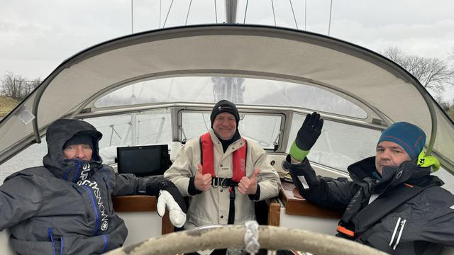
Op de Nomad wordt enkel gezond eten geserveerd!
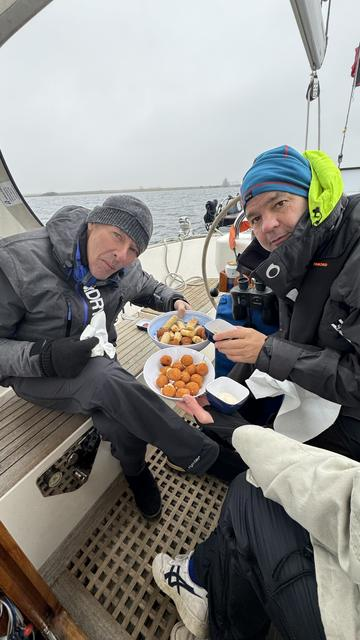
Ondanks verwoede pogingen geen meeuw gevangen... 😢
Part 3: Zeebrugge - Blankenberge solo
Wat is mooier dan bij een winterzonnetje en perfecte 3-4 beaufort op een prachtige winterochtend de Noordzee onveilig te maken? Helaas moest Nomad al vóór 11h in Blankenberge binnenvaren wegens het getij, anders had een omweggetje via Engeland tot de mogelijkheden behoord...
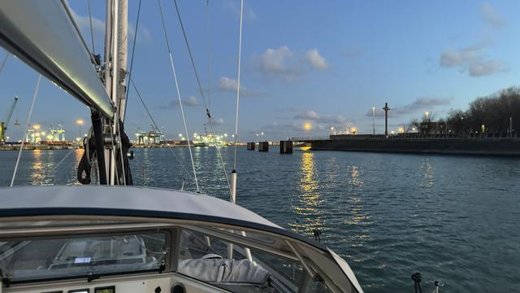
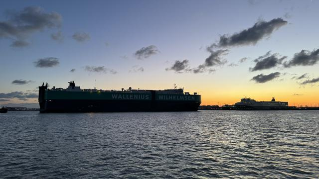
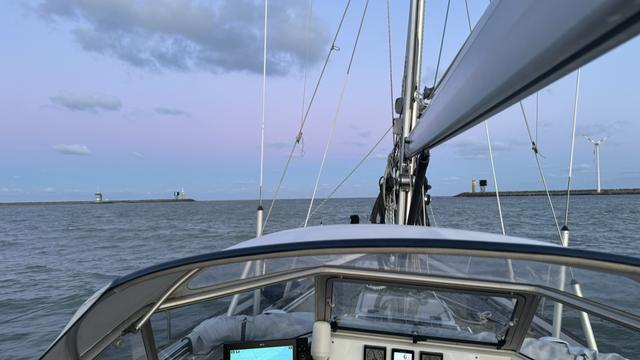
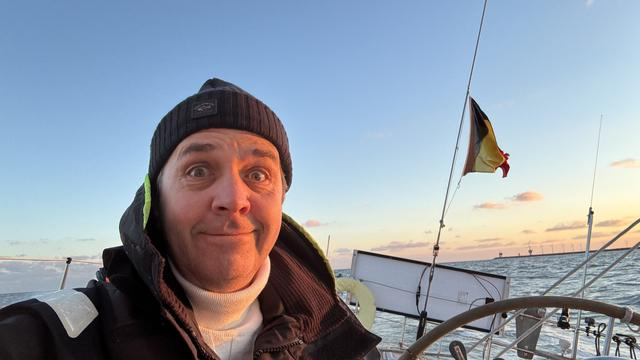
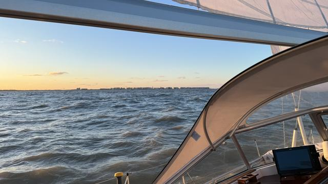
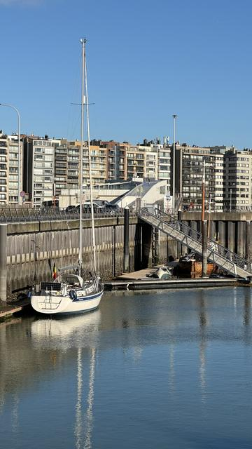
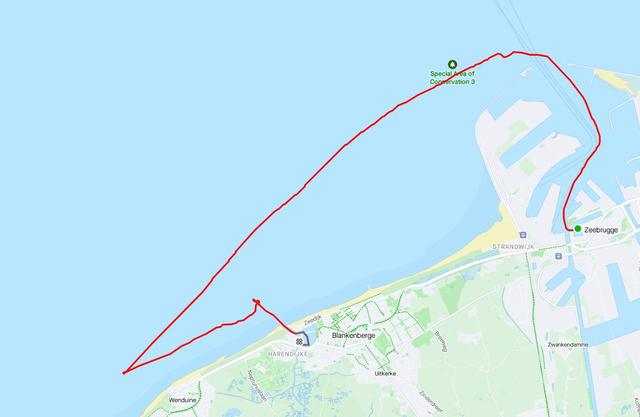